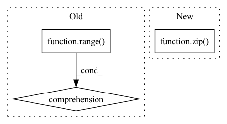

Pattern ID :1875

Before Change
self.to_embed = nn.Embedding(num_tokens, dim) if exists(num_tokens) else nn.Identity()
self.layers = nn.ModuleList([Residual(PreNorm(dim, gMLPBlock(dim = dim, dim_ff = dim_ff, seq_len = seq_len, heads = heads, window = window))) for i in range(depth)])
self.to_logits = nn.Sequential(
nn.LayerNorm(dim),
After Change
window = cast_tuple(window, depth)
layers = nn.ModuleList([])
for ind, w in zip(range(depth), window):
layer_blocks = nn.ModuleList([
PreNorm(dim, gMLPBlock(dim = dim, dim_ff = dim_ff, seq_len = seq_len, heads = heads, window = w))
])
In pattern: SUPERPATTERN
Frequency: 3
Non-data size: 3
Instances
Fragment ID: 4503261
Project Name: lucidrains/g-mlp-gpt
Commit Name: 7642e36ff19c6b299a77e5c1ace038e9e6726202
Time: 2021-05-20
Author: lucidrains@gmail.com
File Name: g_mlp_gpt/g_mlp_gpt.py
Class Name: gMLPGPT
Method Name: __init__
Parent Class: nn.Module
Fragment ID: 4503262
Project Name: kaleidophon/nlp-uncertainty-zoo
Commit Name: 9d09a1510e9130c547c50d1a18c80ed3ffe9cbbb
Time: 2021-08-11
Author: dennis.ulmer@gmx.de
File Name: nlp_uncertainty_zoo/lstm_variants.py
Class Name: CustomLSTMLogic
Method Name: __init__
Parent Class: nn.Module
Fragment ID: 4503259
Project Name: kaleidophon/nlp-uncertainty-zoo
Commit Name: 9f3516a6c83f02bc0beae9489f248823d46dfb84
Time: 2021-06-21
Author: dennis.ulmer@gmx.de
File Name: src/dropout.py
Class Name: VariationalLSTMModule
Method Name: __init__
Parent Class: nn.Module